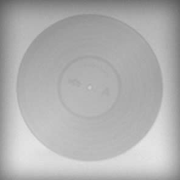

M. D. Ramanathan Concert at Music Academy 1969
Release by oopes

List of tracks

Accompanying artists
He learned music from Tiger Varadachariar, Sabesa Iyer, Ponniah Pillai, and Sathur Krishna Iyengar. He received a Ph.D. in ethnomusicology from Wesleyan University, Middletown, Connecticut, where he also taught.
He had disciples who have carved names for themselves such as P.UnniKrishnan, S. Sowmya, Savithri Sathyamurthy, Seetha Narayanan, Vasumathi Nagarajan...
.jpg)
He learned music from Tiger Varadachariar, Sabesa Iyer, Ponniah Pillai, and Sathur Krishna Iyengar. He received a Ph.D. in ethnomusicology from Wesleyan University, Middletown, Connecticut, where he also taught.
He had disciples who have carved names for themselves such as P.UnniKrishnan, S. Sowmya, Savithri Sathyamurthy, Seetha Narayanan, Vasumathi Nagarajan...
He learned music from Tiger Varadachariar, Sabesa Iyer, Ponniah Pillai, and Sathur Krishna Iyengar. He received a Ph.D. in ethnomusicology from Wesleyan University, Middletown, Connecticut, where he also taught.
He had disciples who have carved names for themselves such as P.UnniKrishnan, S. Sowmya, Savithri Sathyamurthy, Seetha Narayanan, Vasumathi Nagarajan...
Similar concerts
Comments
April 12, 2013, 4:57 p.m.
User Two
This is a good concert
April 16, 2013, 6:58 p.m.
User One
The best, of course!
May 3, 2013, 7:39 p.m.
User Two
Very nice
May 16, 2013, 5:53 p.m.
user8
my first comment in a concert
Please log in to leave a comment or to add a tag.